| プロメテウスの罠〔２０〕 飛び出した町「死の灰を浴びた町長」 (朝日新聞デジタルＳＥＬＥＣＴ) | |
| 朝日新聞社 | |
| (2013) | |
福島県双葉町は、原発事故で警戒区域に指定された町の中で唯一、役場ごと県外に飛び出した。第一原発の爆発で「死の灰」を浴びた町長は３月１２日、町民を被曝から守るためにいったん川俣町に避難させ、その後、埼玉県のスーパーアリーナ、同県加須市の廃校へと漂流する。他方、福島県内の避難所に残った町民も多く、「捨てられた」と嘆いた。帰るべき場所を失うとはどういうことか。想像を絶する過酷な現実を町長や被災者、移転先や国の当事者らの証言とともに検証する。
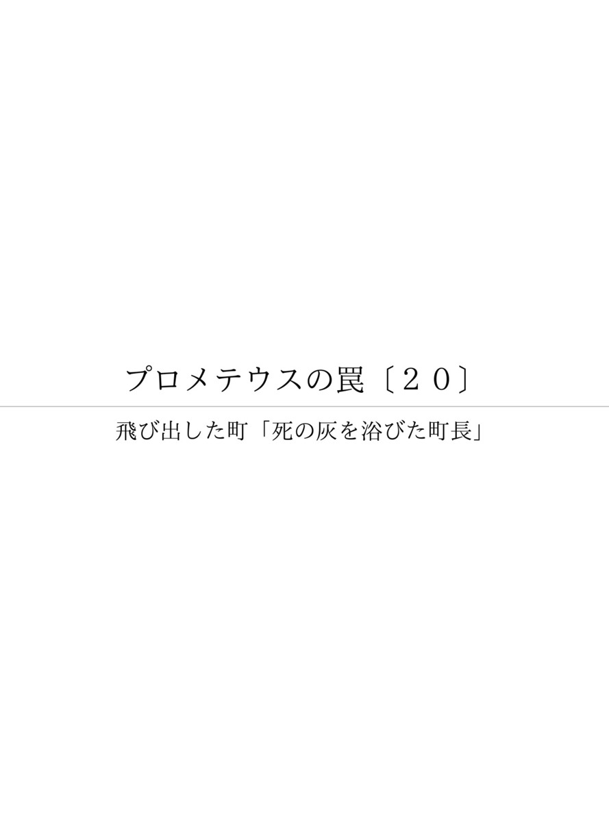
内容紹介
福島県双葉町は、原発事故で警戒区域に指定された町の中で唯一、役場ごと県外に飛び出した。第一原発の爆発で「死の灰」を浴びた町長は３月１２日、町民を被曝から守るためにいったん川俣町に避難させ、その後、埼玉県のスーパーアリーナ、同県加須市の廃校へと漂流する。他方、福島県内の避難所に残った町民も多く、「捨てられた」と嘆いた。帰るべき場所を失うとはどういうことか。想像を絶する過酷な現実を町長や被災者、移転先や国の当事者らの証言とともに検証する。
初出
朝日新聞 二〇一二年十一月十三日～十二月九日
第１章 毎月北東を向き黙祷
第２章 原発がダメになる
第３章 ７千人を受け入れて
第４章 「死の灰」降ってきた
第５章 安全神話は崩壊した
第６章 あふれかえる避難者
第７章 「え、埼玉県か」
第８章 昨晩からの間に何が
第９章 「タテノ」からの電話
第１０章 知事「是非もない」
第１１章 一瞬、外国も考えた
第１２章 町民はどう思うか...
第１３章 日本地図から消える
第１４章 町民はどこにいる？
第１５章 避難住民を把握せよ
第１６章 総務相を動かした涙
第１７章 新たな避難所へ
第１８章 義援金を辞退します
第１９章 私、狂ってますか
第２０章 メッセージは届いた
第２１章 「町に捨てられたと」
第２２章 県内に戻す気はない
第２３章 批判されてもいい
第２４章 戦犯町長なぜいる？
第２５章 首相に爆発した怒り
第２６章 突然の方針転換
第２７章 捨てたわけじゃない
埼玉県加須（かぞ）市は関東平野のほぼ真ん中に位置する。どこまでも真っ平らな大地に、刈りいれを終えた田んぼが広がる。そんな風景のなかに、廃校になった旧騎西（きさい）高校がある。
１１月１１日午後２時４６分、その正門を入った広場で１分間の黙祷（もくとう）がはじまった。その数約５０人。福島県の双葉（ふたば）町から避難してきて、廃校の校舎に住む人々だ。みんなが北東の方角を向いている。
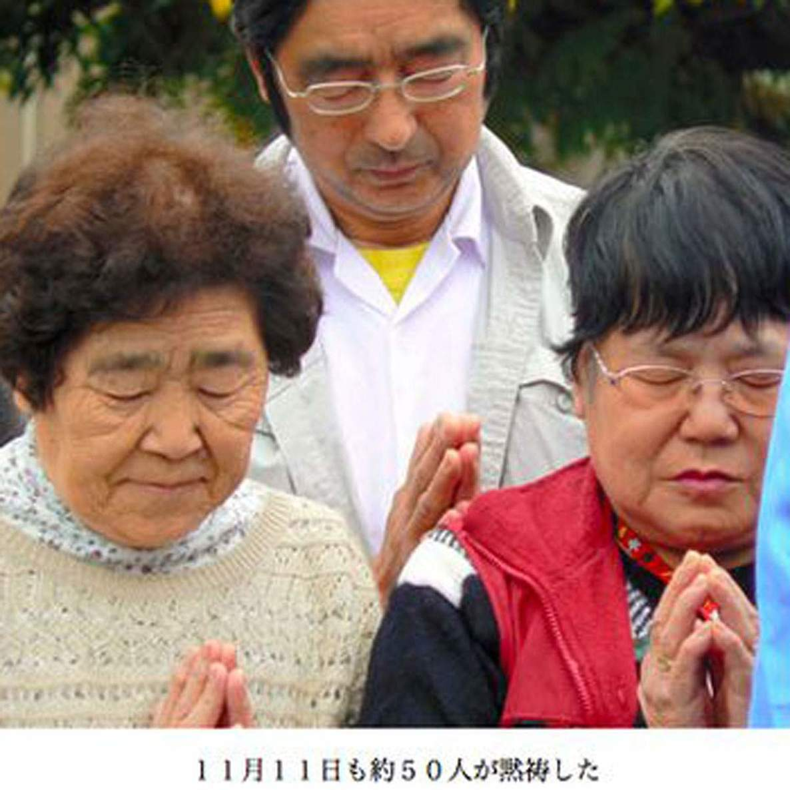
その方角の空のかなた、約２００キロ先に双葉町がある。福島第一原発の５、６号機をかかえる町だ。
第一原発を中心に半径１０キロの円を描くとすっぽりおさまってしまう。いまも全域が警戒区域に指定されたままだ。
黙祷は毎月１１日に行われる。地震発生時刻に合わせ、人々は津波で亡くなった町民を悼み、帰りたくてもかなわない、ふるさとへの思いを新たにする。
双葉町の「漂流」は、地震翌日の２０１１年３月１２日からはじまった。政府の１０キロ圏外への避難指示を受け、約６９００人の町民の多くは北西に約４０キロ離れた川俣（かわまた）町へと移動した。
１週間後の１９日には再避難を決行する。４０台のバスに分乗し、約１２００人の町民が役場ごと向かった先はさいたま市。双葉から約２１０キロも離れたさいたまスーパーアリーナだった。
だが、はじめから使用期限は３月いっぱいと切られていた。それで、埼玉県の紹介により、ここ旧騎西高校へと落ち着いた。現在、１６４人が校舎で暮らしている。
原発事故で福島県の多くの自治体が、役場機能の移転を余儀なくされた。しかしすべて県内の移動。県を飛び出したのは双葉町だけだ。
町長である井戸川克隆（いどがわかつたか）（６６）の独断だった。職員や議員のだれにも相談しなかった。
「なぜ県を飛び出したのか」「なぜ縁もゆかりもない埼玉県だったのか」――。
町民や議員、記者から同じ質問を浴びつづけても、詳細を語ろうとしなかった。
その井戸川から「すべて話しましょう」という言葉を聞いたのは、スーパーアリーナで取材をはじめてから１年半後、この９月のことだった。
双葉町はなぜ埼玉県に避難したのか。町長の井戸川克隆はこの９月、その経緯を語り出した。
大震災の２０１１年３月１１日午後、井戸川は車を運転していた。
４月から双葉郡６町２村の町村会長に就任することが決まっていた。約１０キロ離れた富岡町の双葉地方会館まで、その書類を届けに、公用車を運転して出かけた帰りだった。
車に乗ってまもなく。会館の正門を出たところで、車が上下に激しくバウンドした。
車のせいかと思ったが、ほかの車も揺れている。見上げると電線が波打っていた。「地球が割れてしまうんじゃないかと思った」
ハンドルにしがみついて、頭に浮かんだのは第一原発のことだった。
２００５年に町長になるまで、水道管工事会社の社長だった。２号炉の建設にも携わったことがある。分厚い鉄板を溶接した。「あの部分は裂けていないか」。揺れは長くつづいた。「もうやめてくれ、原発がダメになってしまう」
とにかく役場に早く戻らなければならない。道路はあちこちで陥没し、路肩の崖が崩れて道をふさいでいた。途中でカーナビをテレビに切り替えた。アナウンサーが大津波警報を繰り返していた。
そのころ、町長不在の役場では防災を担当する住民生活課の課長、武内文昭（たけうちふみあき）（６１）が大津波警報の対応に追われていた。課長席の後ろに置いてある震度計が「６強」と印字した紙を吐き出した。
強い余震が間断なく襲った。課員の宇名根良平（うなねりょうへい）（３６）は机の下にもぐったまま、防災行政無線で放送する文案を書きなぐり、武内のもとに持ってきた。「高い場所に避難を」と呼びかけていた。
「これで流します」。地震から２０分ほど過ぎていた。「とにかく、すぐ放送しろ！」
海岸沿いを通り、なんとか役場にたどり着いた井戸川は、その足で議会フロアの４階まで駆け上がった。
窓から外が見えた。
海岸沿いの二つの集落の家並みが消えていた。松林の向こうに見えるはずの海がそこまで迫っていた。津波が到達したのだ。
さっき走った道路ものみ込まれているはずだ。あと１０分遅ければ命はなかった――。慄然（りつぜん）とした。
夜、役場は津波被害集落での救出準備に追われた。まさか全町避難になるとは、井戸川も思いもしなかった。
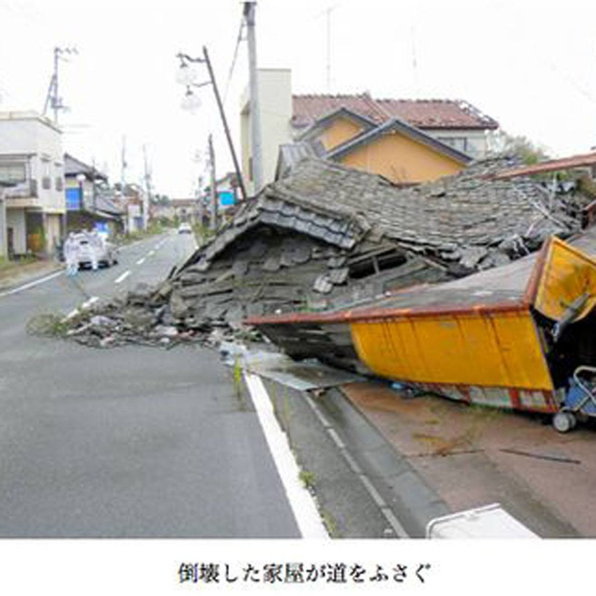
双葉町長の井戸川克隆は、一睡もしないまま、役場で２０１１年３月１２日の朝を迎えた。
朝になれば、津波で壊滅した海岸沿いの集落で救出活動を再開しなければならない。その準備に追われていたからだ。
うっすらと明るくなったころ、役場１階のテレビ画面にテロップが流れた。午前５時４４分、菅直人首相が福島第一原発から半径１０キロ圏内の住民に避難を指示したのだ。
半径１０キロ？ 双葉町はすっぽりと入ってしまう。全町避難ということか。事態は急を要する。井戸川は考えた。
避難しろといわれても、受け入れ先もないまま町民に指示は出せない。海岸沿いを南北に走る幹線道路は津波でやられている。太平洋を背にして西へ逃げるしかない。
国道１１４号沿い、北西約４０キロにある川俣町が頭に浮かんだ。
午前６時前、川俣町の町長、古川道郎（ふるかわみちお）（６８）に電話を入れた。すぐに出た。古川も町の災害対策本部で陣頭指揮をとり、眠っていなかったのだ。
「うちの原発が危険な状態だ。避難しなければならなくなった。７千人の全町民を受け入れてもらえないでしょうか」
「７千人」という数を古川はいまも鮮明に覚えている。川俣町の人口は約１万５千人。人口の半分近い避難者を受け入れることは果たして可能なのか、と思ったからだ。
でも切羽詰まって電話をしてきた井戸川の心情や双葉町民を考えると、断る選択肢はなかった。
「わかりました。できる限りのことはします」
午前７時４０分、双葉町の住民生活課員、宇名根良平が防災行政無線で町民に呼びかけた。
《いま全地域に避難命令が発令されました。各自マイカーで福島方面に避難してください。避難場所は川俣小学校を確保してありますのでお知らせいたします》
一斉に避難が始まった。
午前９時過ぎ、１号機の格納容器内の圧力を下げるため、水蒸気を放出するベントが始まった。役場２階の窓際に置いていた線量計の数値はジリジリと上がった。
井戸川はいう。
「それでも爆発するよりはまし、仕方がないと思いました」
その「爆発」が、数時間後に起きた。井戸川は放射性物質をもろにかぶってしまう。
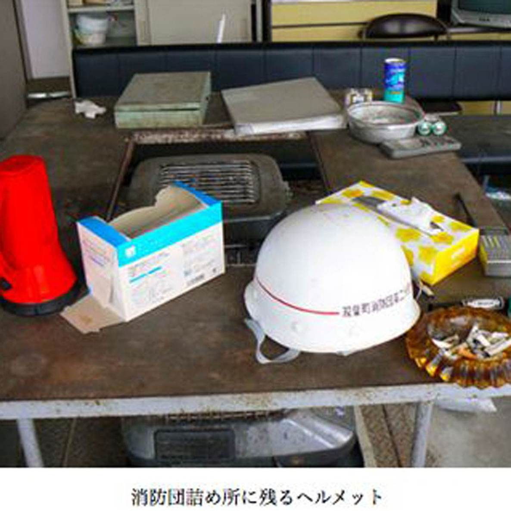
３月１２日朝、防災行政無線で全町民に避難を呼びかけたあとも、双葉町長の井戸川克隆は町に残った。最後の一人がちゃんと避難するまで見届けるつもりだった。
実際、町の福祉施設「ヘルスケアー」には５８人の利用者が残っていた。前日にデイサービスを受けにきていて大地震が起き、そのまま夜を明かした高齢者が大半だった。
ヘルスケアーに隣接する双葉厚生病院の患者、特別養護老人ホーム「せんだん」の入所者も避難できていなかった。双葉高校にも自衛隊ヘリによる避難を待つ人たちが取り残されていた。
午後になって、国が避難のために手配したバス５台が町に着いた。井戸川が「ヘルスケアーで入所者や患者を乗せてほしい」と要請した。
町社会福祉協議会の職員らと一緒にヘルスケアーの外で避難誘導にあたっていたときだった。「ドン」という大きな音が響き渡った。
低いが、プロパンガスが爆発したような、腹にこたえる音。
午後３時３６分、福島第一原発１号機の原子炉建屋で水素爆発が起きた瞬間だった。
井戸川にはすぐ１号機の爆発だとわかった。爆発の白い煙は建物の陰にいて見えなかったが、ベントで格納容器の圧力を低下させようと懸命の努力がつづいていることを知っていたからだ。
それから２、３分後。空からぼたん雪のようなものがフワリフワリと落ちてきた。
大きさは五百円玉サイズから握りこぶしほどまで、さまざまだ。建屋の保温材の繊維のかたまりのようだった。放射能まみれの塵（ちり）――。
そのとき周りには、車いすの高齢者や社協職員、自衛隊員、警察官ら１００人近くがいた。その動きが止まった。
だれも言葉を発しない。静寂のなか、「ぼたん雪」はふりしきった。
最悪だ、とうとうやってしまった、と井戸川は思った。これで終わりだ。
秘書広報課の職員、板倉幸美（いたくらゆきみ）（５３）はヘルスケアーの事務室でこの光景を見ていた。
つけっぱなしのテレビが、福島中央テレビの画面を映している。建屋から白い煙が上がっていた。
ある言葉が頭をよぎった。核爆発や原発事故のあとに降る「死の灰」という言葉だった。「これがそうか、と思ってぞっとしました」
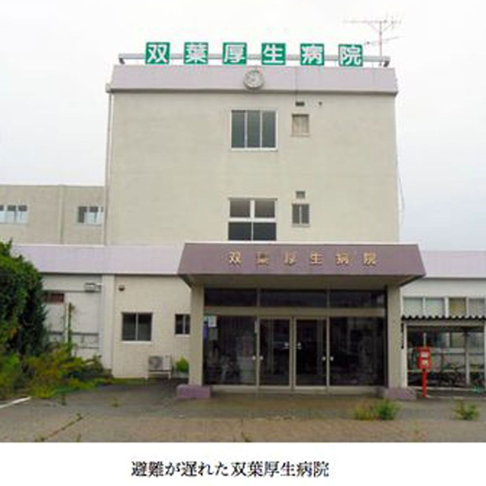
福島第一原発１号機が爆発したあと、「ぼたん雪」をかぶった双葉町長の井戸川克隆たちはこのとき、放射性物質をあびてしまう。
核爆発や原子力事故で生じる放射性降下物だ。日本では１９５４年、米国の水爆実験で被曝（ひばく）した第五福竜丸事件が有名だ。このときは死者が出たため「死の灰」といわれた。
３月１２日、双葉町に落ちてきたのはぼたん雪のような繊維だけではなかった。
町役場に残っていた住民生活課長の武内文昭は原発建屋の爆発音のあと、しばらくして別の「ドン」という大きな音を聞いた。
「あとで確かめたわけではないけど、あれは爆発音とは違う。建屋のコンクリートのかたまりが役場の近くに落ちた音だと思う」
ぼたん雪はどのくらいの時間降ったのか。
福祉施設「ヘルスケアー」にいた町社会福祉協議会の木口加代子（きぐちかよこ）（４９）は「すぐにやんだわけでも、長く降ったわけでもない。１０分くらいでした」という。
ヘルスケアーにいた町秘書広報課の板倉幸美も「５分から１０分の間」と話す。
降りはじめたとき、井戸川は言葉を失ったが、すぐに自分を取り戻した。「なにしてるんだ。なかに入れ」と外にいる町民に大声で呼びかけた。
社協職員の木口らは、外にいた車いすの高齢者らを急いでヘルスケアーの玄関ホールに誘導する。
井戸川もホールに入ってきた。「窓から離れた方がいい！」
木口はいう。「切迫した感じで、怒られているみたいだと話す職員もいました」
確かに井戸川は怒っていたのかも知れない。
０７年６月、井戸川は、福島第一原発の７、８号機増設要望決議の凍結解除を宣言した。０２年の東京電力のトラブル隠しで、増設要望は凍結されていた。
当時、町は財政難にあえいでいた。幕引き宣言は、増設に向けた電源立地等初期対策交付金を手にするためだった。
「それでも東電や国には、安全が前提ですよ、とつねに注文をつけていた。国も東電も、大丈夫ですといっていた」
井戸川は「死の灰をあびた」と感じた。安全神話は、その瞬間、完全に崩壊した。一刻も早く逃げなければならなかった。
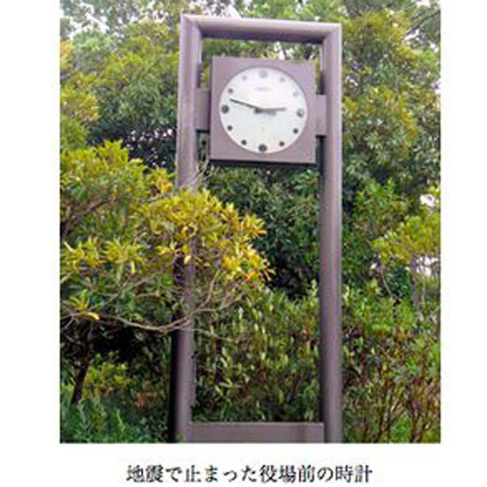
２０１１年３月１２日午後。
双葉町に降った「死の灰」がやむと、福祉施設「ヘルスケアー」に取り残されていた町民たちが次々と避難バスに乗りこんだ。
午後４時半過ぎ、最後のバスが出発したのを見届け、町長の井戸川克隆も避難先の川俣町に向かった。福島第一原発１号機の爆発から約１時間がたっていた。
町職員３人と相乗りの公用車のなかで、井戸川は悔しくてならなかった。
爆発のとき町内には、双葉厚生病院の患者も含めるとまだ３００人ほどがいた。彼らには被曝（ひばく）させてしまった。「全員避難」は間に合わなかったのだ。町長として、それがたまらず申しわけなかった。
１２日、川俣町に避難した町民の数は、秘書広報課長の大住宗重（おおすみむねしげ）（５８）によると「町人口の半分ほど、３５００人くらい」だ。それが川俣町の小学校や高校、公民館などに分宿した。
川俣町には浪江町や南相馬市からの避難者も押し寄せた。約１万５千人の町は、ピーク時には７千人近くの避難者であふれかえった。
町内の米店は、手持ちの米をすべて提供した。近所の人がストーブや毛布を避難所に持ち寄った。婦人会、消防団、あらゆる団体が避難者対応にあたった。
ある夕、井戸川が川俣町の災害対策本部をたずねると、５０人ほどの女性たちが懸命におにぎりを握っている最中だった。
「お世話になっています」。声をかけながら思った。
毎日毎日、こうしておにぎりを握ってくれる人がいて、自分たちは食べさせてもらっている。
川俣町の人たちの気持ちはありがたい。でも、人口の半分近い避難者というのは、いかにも負担が大きすぎる。いつまでも世話になるわけにいかない。
一方、第一原発の状況は悪化の一途をたどっていた。
１４日には３号機の原子炉建屋が爆発。１５日早朝には４号機でも爆発が起きた。
井戸川が持ち歩いていた線量計の数値はじりじりと上がった。第一原発から約４５キロ離れた川俣町にも、放射性物質は飛んできているのだ。
さらに遠くへ――。
１８日朝、井戸川は町幹部に次の避難先を告げた。さいたま市のさいたまスーパーアリーナだった。
「さいたま市に行く」
３月１８日午前７時、川俣町の避難所で開かれた双葉町災害対策本部の会議で、町長の井戸川克隆は町幹部にそう告げた。
さいたまスーパーアリーナは５千人収容できる。移動のバスは埼玉県が用意してくれる。世話になった川俣町の町長には丁重に礼をいった。福島県にも「明日移動するので準備をよろしく」と伝えた。
しかし秘書広報課の課長、大住宗重にとっては寝耳に水だった。大住はつねに町長の横にいたのに、その決断に気がつかなかった。
「え、埼玉県か、と思いました。でも福島第一原発が予断を許さない状況でしたから、それで遠くへ避難するんだろうと納得しました」
１８日当時、川俣町には約２千人の双葉町民が避難していた。大移動だ。職員は準備に追われた。
大住は、自分が寝泊まりしていた福田小学校の体育館に戻り、ハンドマイクで説明した。
住民から次々と声があがった。
「そういう遠いとこさ、なんで行かねばならねんだ」
「なんで逃げなきゃなんねんだ。原発で、ここも危ないのか。なにが起きてんだ」
大住はそれぞれにていねいに答えた。
「受けてくれるところがなかったら、逃げられない。今度のところは大きいから、みんなが同じ場所にいられる」
「爆発が起きて、このあたりも線量があがってるらしいんだ」
それでも「俺は行かねえ」という人も多かった。結局、福田小で移動を希望したのは、１４５人のうち１１２人だった。
飯坂小学校に避難していた養蜂業の小川貴永（おがわたかひさ）（４２）は「あす避難する」と聞いて、ずいぶん急だなと思った。
「とにかく早く離れるという雰囲気だった。それにしても、県を飛び出して、どうして埼玉なんだ、とは思ったな」
住民生活課長の武内文昭も同じ疑問を感じた。１６日夕、井戸川が教育長の江尻邦夫（えじりくにお）（６８）に、こう話しているのを聞いたからだ。
「どっかに行かねばならないな。教育長は、群馬の山のあたりはどう思う？」
「群馬の山のあたり」が、なぜ埼玉になったのか。
実はその前に、新潟県柏崎市という話もあった。
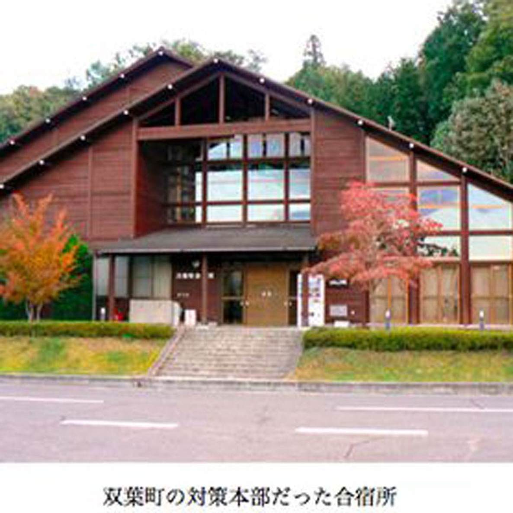
２０１１年３月１６日の深夜１１時半。
床に就いていた新潟県柏崎市の市長、会田洋（あいだひろし）（６５）の枕元で、携帯電話が鳴った。双葉町の町長、井戸川克隆からだった。
柏崎市には、東京電力の柏崎刈羽原発がある。全国原子力発電所所在市町村協議会で２人は同じ副会長を務めていた。親しい間柄だ。しかしこんな深夜に電話をかけてくることはなかった。
双葉町が川俣町に避難していることは聞いていた。いったいなにがあったのか。
そう思いながら携帯を耳にあてた。井戸川はいう。
――福島第一原発の状況が悪化している。１２００人の町民を避難させたいが、避難先が見つからないで困っている。柏崎でなんとか受け入れてもらえないだろうか。
「助けてください」と井戸川はいった。切羽詰まった様子だ。
会田は答えた。
「わかりました」
しかし、電話を切ったあと、考えこむ。１２００人を柏崎だけで受け入れられるのか。
会田は翌１７日早朝、隣接する長岡市の市長、森民夫（もりたみお）（６３）に電話をかけ、事情を話した。
「あふれた場合、一部を受け入れてくれないか」
さいわい森はすぐに了解してくれた。
午前８時半から開いた柏崎市の支援対策本部の会議で、会田は幹部たちに受け入れ準備を進めるように指示した。受け入れに向けた動きが始まった。
迎えのバスは新潟県に対応をまかせた。市総合体育館と市西山総合体育館の収容人数の検討、弁当の手配、議会への報告......。報道機関にも発表した。
地元紙・新潟日報の１７日夕刊に「柏崎１２００人受け入れへ 福島・双葉町の要請を受け」という見出しの記事が掲載された。
《１８日以降、市総合体育館、市西山総合体育館に受け入れる》
だが、１７日の午後２時前、事態は急転する。会田に井戸川から電話が入ったのだ。
「本当に申し訳ありません。さいたまスーパーアリーナに行くことになりました」
「それはよかったですね。わかりました」
そう答えたものの、会田は首をかしげた。昨晩からの間に、何があったのだろう。
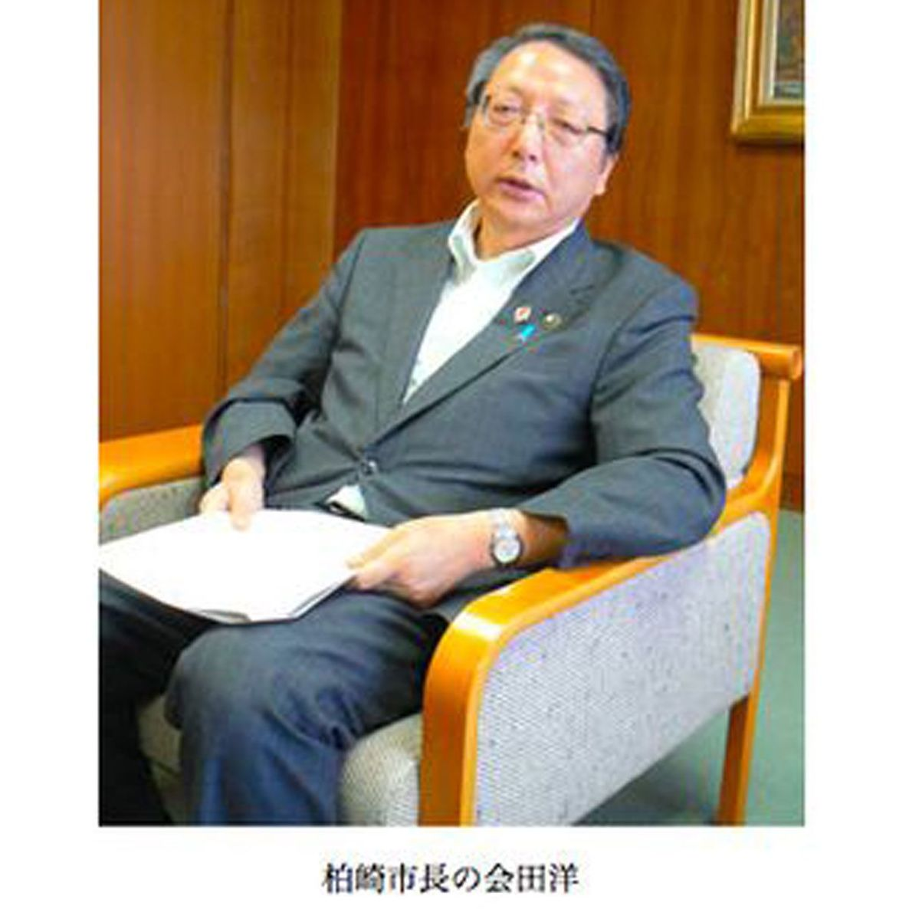
３月１６日に新潟県柏崎市への避難を決めた双葉町長の井戸川克隆は、翌１７日、とつぜん行き先をさいたま市へと変えた。何があったのか。
１７日の一本の電話がきっかけだった。それは午前１１時２５分、埼玉県庁第２庁舎２階にある都市整備政策課にかかってきた。
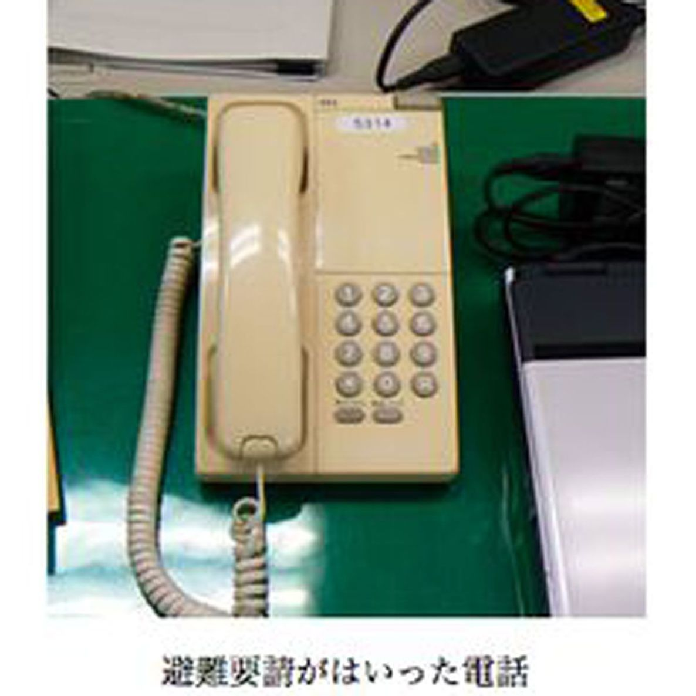
主幹の西村実（にしむらみのる）（５０）が受話器をとると、落ち着いた感じの女性の声だった。
「さいたまスーパーアリーナで被災者を受け入れる、と聞きました。どんな手続きが必要ですか」
埼玉県はその前日、アリーナで避難者を受け入れると発表し、インターネットでも流していた。都市整備政策課は、その問い合わせ先になっていたのだ。
「あなたは？」
「福島県双葉町の町長から避難の受け入れ先を探してほしいと頼まれている者で、タテノといいます」
西村は字をたずねなかった。話の腰を折りたくなかったからだ。片仮名で「タテノ」とメモした。
「現在、川俣町に避難している２千人の町民が、至急、再避難を希望しています。アリーナで受け入れてもらえますか」
これはおおごとだ、と西村は思った。双葉町が福島第一原発のある町だということは知っていた。しかし２千人というのは大人数だ。
でも、困っている。この話は断るわけにいかない。「大丈夫です」とはっきり答えた。
「福島県を通じて要請しなければなりませんか」
「いえ、市町村からの要請で大丈夫です」
「では、町長の井戸川克隆の番号をお知らせしますので、直接お話しいただけますか」
「タテノ」はそういって、町長の携帯電話と自分の会社の番号を告げ、電話は切れた。
西村は課長の山畠則義（やまはたのりよし）（５７）に電話の内容を報告した。
とにかく知事の決裁をあおがなければならない。副知事の広畑義久（ひろはたよしひさ）（５２）の部屋に向かう山畠に西村は声をかけた。
「原発の地元の町です。断ることはできませんよ」
副知事室で、山畠は福島県の地図を広げた。双葉町の位置を説明しようとすると、広畑はいった。
「いや、必要ないよ」
どうして不必要？ ああそうか、副知事は福島出身だ、と山畠は思い出した。
埼玉県の副知事、広畑義久は、福島県の富岡町の出身だった。
双葉町と同じ「浜通り」にある。今回の福島第一原発事故で、やはり避難の対象地域になっていた。
広畑は東大を出て建設省（現・国土交通省）に入った、いわゆるキャリア組だ。そこから埼玉県に出向してきていた。
子どものころ、福島第一原発ができた。通っていた中学の校庭に放射線量を測定するモニタリングポストが設置されたことを覚えている。
事故では実家の両親も町外に避難していた。双葉町民約２千人のさいたまスーパーアリーナへの避難要請はひとごとではなかった。
急いで知事室に上田清司（うえだきよし）（６４）をたずねた。
「わかった。是非もない」
即決。２０１１年３月１７日正午前。電話から２０分もたっていなかった。
知事の決裁のあと、都市整備政策課主幹の西村実は、双葉町長の井戸川克隆と受け入れについて具体的にやりとりを始める。使ったのはメールだった。
メールアドレスは、避難要請の電話をかけてきた「タテノ」に聞いた。井戸川の携帯電話がつながらなかったからだ。
そのやりとりが残っている。
町長《よろしくお願いします。できれば約２千人１カ所にと考えています》
西村《アリーナでの受け入れはすぐに可能です》
町長《ありがとうございます。おそれいりますが、バスの手配も県庁でお願いします》
西村《わかりました》
しかし井戸川は１６日深夜、新潟県柏崎市の市長、会田洋を電話で起こして受け入れを頼んでいる。
それなのにどうして、さいたまスーパーアリーナに変更したのか。
井戸川はいう。
「コミュニティーを守るためにも１カ所に町民を集めたかった。それが柏崎では無理でした。さいたまアリーナがベストだった」
避難者があふれ返っている福島県内は望むべくもなかった。もちろん放射能の影響の問題もある。だから県外に飛び出した。
１７日午後１時過ぎ、１９日に移動する段取りが整った。井戸川は柏崎市の会田にキャンセルの電話を入れ、丁重にわびた。
ところで、埼玉県庁に電話してアリーナへの道をひらいた「タテノ」とは何者なのか。
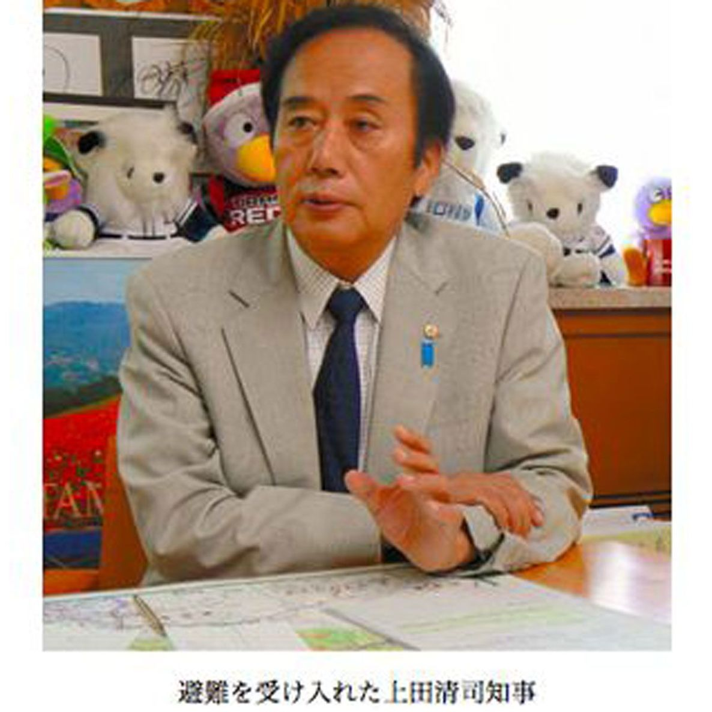
埼玉県の担当者に電話した「タテノ」は、舘野操子（たてのみさこ）（５６）だった。東京都内で編集プロダクションの会社を経営する女性で、双葉町長の井戸川克隆の古い知り合いだ。
井戸川には、２００９年に死んだ七つ年下のいとこがいた。東京で編集プロダクションを経営していた。当時、舘野はその部下で片腕的な存在だった。
そのいとこは、ふるさとである双葉町のまちおこしを熱心に支援していた。イベントなどがあると、舘野たち社員を連れ、何度も双葉町を訪ねてきた。
いとこに紹介され、舘野と知り合った。町長になる前のことだ。
１１年３月１６日、町民の避難先を懸命に探していた井戸川に、その舘野からメールがあった。
《双葉町のことを心配しています。できることがあれば、なんでも言ってください》
そんな内容だった。
前日の１５日、菅直人首相は福島第一原発から半径２０～３０キロ圏内の住民に屋内退避を指示している。原子炉建屋の爆発が相次ぐ事態を受けた措置だった。
そのニュースを知ってメールを送ったのだという。
「できること」とは、避難先探しを手助けすることだった。
町を心配してくれる人がここにもいる――。井戸川にはそれで十分心強かった。
《ありがとう。大丈夫》
しかし、その７時間後に２度目のメールを送ることになる。今度は避難先探しを依頼する内容だった。
どうして気が変わったのか。
「パソコンも何もかも役場から持ち出せなかった。自力でやるつもりだったのですが、情報が入らない」
国や県も、避難先についてなにも教えてくれない。情報源といえばテレビしかなかった。
「差し迫っていました。それで、あらためて避難所探しをお願いすることにしたんです」
町民を、どれだけ安全な場所に避難させられるか。当時、井戸川はかなり思い詰めていた。１２日の１号機爆発で放射性物質をかぶってしまった記憶が強烈だった。
「できるだけ遠くへと思っていました。一瞬ですが、外国も考えた。どこの国ということはありませんが。しかしそれでは町民はついてこないな、と思い直しました」
その町長のもとに舘野は避難情報を寄せつづけた。
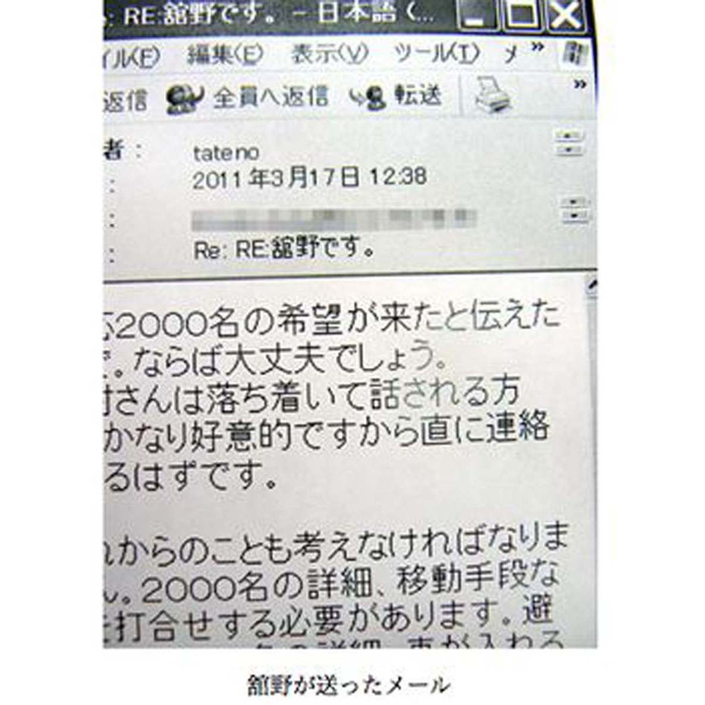
双葉町長の井戸川克隆から避難先さがしを依頼された舘野操子は、さっそく、群馬県片品（かたしな）村の情報を伝えた。片品村は千人の受け入れを発表していた。
２０１１年３月１６日夕、双葉町住民生活課長の武内文昭が井戸川と教育長の会話を小耳にはさんでいる。そのときの「群馬の山のあたり」というのは、この情報だった。
だが、片品村には南相馬市も手を挙げていた。当時、原発周辺の自治体はどこも、懸命に自力で避難先をさがしていた。片品村は結局、南相馬市に決まってしまう。
翌１７日午前、舘野はあらたに、さいたまスーパーアリーナが５千人を受け入れるという情報を耳にする。すぐ埼玉県庁に電話した。それが、埼玉県都市整備政策課の西村実が受けた「タテノ」の電話だった。
２日後の１９日朝には、川俣町からアリーナへの移動が始まった。
午前１０時、埼玉県が手配したバスに町民が次々と乗り込んだ。マイカーのガソリンが少ない町民は、いったん福島市のあづま総合運動公園に向かい、その駐車場に車を置いてバスに乗った。
大型バス４０台とマイカー数十台による約１２００人の大移動だった。井戸川は職員３人と一緒に先遣隊として公用車で移動した。福島西インターで東北自動車道に乗ると一路南へ走った。
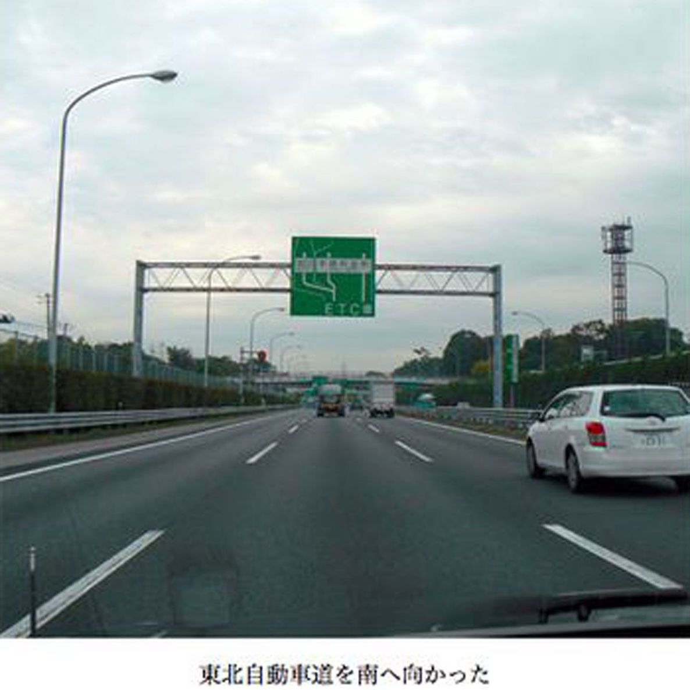
途中、サービスエリアで休憩した。井戸川はトイレでヒゲをそった。１１日の地震発生以来、伸び放題だったからだ。
「車の中で、町長は険しい顔で押し黙ったままでした」と秘書広報課の板倉幸美はいう。
移動中、井戸川の思いは揺れつづけた。
埼玉県への移動は川俣町に避難していた町民にしか伝わっていない。あちこちに散らばった町民に連絡する方法はなかった。
――なにも知らされないまま福島県に残された町民は、捨てられたと思うだろうか。
――福島県を飛び出すという自分の判断は、町民にどう評価されるだろうか。
――しかし放射能から町民を守るには遠くに逃げるしかない。
――避難は町民の人生を変えるかも知れない。この選択は本当に正しかったのだろうか......。
川口ジャンクションで東北道をおり、アリーナに着いたのは、午後２時３９分だった。
さいたまスーパーアリーナに移ると、双葉町の人たちの状況は川俣町のときと一変した。
廊下の床に毛布を敷いて寝るのは変わらない。しかし、全館暖房でとにかく暖かかった。
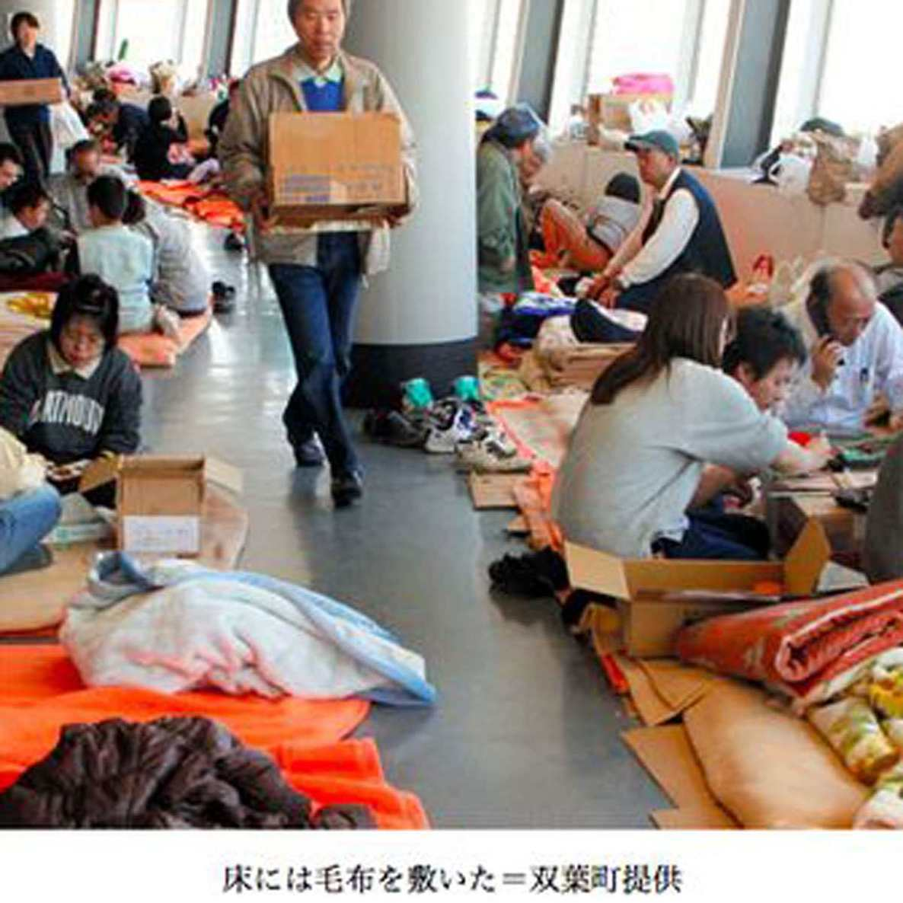
双葉町で米穀雑貨店を経営していた相楽比呂紀（さがらひろき）（４４）がアリーナで驚いたのは、物資とボランティアの多さだった。
「川俣町でもあたたかいもてなしを受けた。でもアリーナに来たら、申し訳ないほど、なにからなにまでやってくれた」
埼玉県社会福祉協議会の総務人事部長だった島田守（しまだまもる）（４４）によると、多い日は千人を超す希望者がアリーナ内に設けたボランティアセンターに列をつくった。
首都圏で１２００人を受け入れた大規模避難所はここだけだった。役場ぐるみ県を飛び出した双葉町は、マスコミの注目の的となった。
テレビや新聞を見て、首都圏の各地から、学生や主婦らボランティアが駆けつけた。配食、散髪からマッサージまでやってくれた。
しかしアリーナに着いてから、町民の中に将来への不安が広がり始めた。米穀雑貨店の相楽はいう。
「ここに来るまでは無我夢中だった。でも時間ができると、いろいろ考えるようになって......」
このままだと、避難生活は月単位になるだろう。長ければ年単位かもしれない。その場合、仕事はどうするのか。住む場所は――。
考えはじめるときりがなかった。
町議の伊澤史朗（いざわしろう）（５４）は当時、こう打ち明けた。
「日本地図から双葉町が消えてしまうんじゃないか。そんなことも考えるんです」
２０１１年３月２０日、町長の井戸川克隆はアリーナに臨時役場を開設する。
４階の階段近くの一角に手書きの「双葉町役場」という紙を貼り、テーブル５台を置いて電話３台とファクスを引いた。
井戸川はいう。
「行政機能の回復といっても、できることはほとんどない。被災証明書の発行と、全国に散らばっている町民の情報の集約が主な仕事でした」
臨時役場の開設もテレビや新聞が取り上げた。
そんな双葉町のニュースに、総務相の片山善博（かたやまよしひろ）（６１）が注目した。彼は総務省の課長を呼び、スーパーアリーナに行って状況を見てくるよう指示した。
総務省地域政策課長の室田哲男（むろたてつお）（５２）は２０１１年３月２４日、総務大臣の片山善博から大臣室に呼ばれ、さいたまスーパーアリーナに行くよう指示された。
室田は片山からこういわれたのを覚えている。
「避難した役場が、どんなことに追われ、なにに困っているのか。国としてどんな支援ができるか考えたいので、よく聞いてきてくれ」
県外への役場ごと避難は双葉町だけだったが、福島第一原発の周辺町村はどこも、福島県内のほかの自治体に役場機能を移していた。
大熊町は会津若松市へ。浪江町は二本松市へ。富岡町と川内村は郡山市へ......。
避難した役場でなにが起きているのか。霞が関には情報がほとんど上がっていなかった。
片山は思った。前代未聞のことが起きている。当事者の町村は報告どころじゃないだろう。それならこちらから見に行かなければ――。
それで室田を呼んだのだ。
翌２５日、室田はアリーナを訪ねた。
アリーナ各階の通路に毛布を敷いて、避難者が横になっている。少しでもプライバシーを保とうとするのだろう、隣の家族との間に段ボールが積み上げてある。それが高い壁となって連なっていた。
テーブルとパイプ椅子がならんだ臨時役場では、町長の井戸川克隆や何人もの課長たちが忙しく立ち働いていた。
町で室田に応対したのは、秘書広報課長の大住宗重だった。さっそく質問をはじめた。
――困っていることは何ですか。
「町民の安否確認がほとんどできていないことです。アリーナ以外の町民がいったいどこに避難しているのか。まったく把握できていない状況です」
――ほかには。
「被災証明を発行するにしても本人確認に困っています」
ほとんどの町民は、２～３日の避難で帰れると思っていた。そのため、着の身着のままで本人を証明するものを何も持っていない。
町当局も、住民基本台帳を役場から持ち出せなかった。だから、本人が証明書の申請に来ても、住基台帳のデータと突き合わせることができないのだ。
じっくりと話を聞いた室田は総務省に戻り、さっそく片山に報告を上げた。
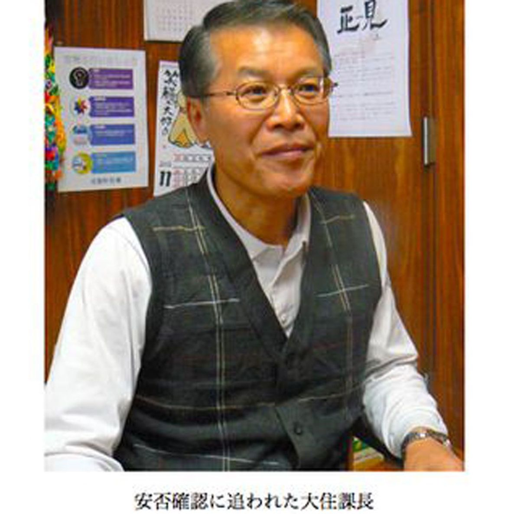
２０１１年３月２５日、総務省。
さいたまスーパーアリーナの報告を聞いた総務大臣の片山善博は、すぐに自治行政局長の久元喜造（ひさもときぞう）（５８）を呼んだ。
「避難元の自治体が、どこに住民が避難したかを把握できるシステムを構築できませんか」
当時、福島県から膨大な数の避難民が県外へと流出していた。３月末時点で避難を受け入れた自治体数は約千にも及んだ。
「わかりました」
局に戻った久元は、住民制度課長の山崎重孝（やまさきしげたか）（５２）と検討を始めた。山崎は住民基本台帳のネットワークシステムに詳しかった。
局内で連日、関係課による打ち合わせが行われた。
双葉町など避難元の市町村が、所在不明の住民をいちいち全国の自治体に照会することは不可能だ。ただでさえ混乱し、過労気味の避難元市町村に、これ以上の負担はかけられない。
全国統一の書式をつくるというのはどうか。その書式に受け入れ自治体が避難者のデータを書き込み、避難元の自治体に打ち返す。それしかないぞ。
３月末には、その線で「全国避難者情報システム」の骨格がまとまる。
避難受け入れ市町村は、避難者に氏名、生年月日、性別、避難前の住所、いまの避難状況などの情報を報告してもらう。
市町村はその情報を全国統一のエクセルファイルに打ち込み、避難先の都道府県に閉鎖系のコンピューター回線で送る。
情報を受けた都道府県は、それを避難前に住んでいた県、市町村に提供する――。
このシステムだと、避難元市町村に何も負担がかからない。
４月第３週から全国でシステムが動き始めた。大量の避難者が一時に発生したとき、住民の所在を確認する道筋がこれで整備された。わが国で初めてのケースだった。
片山はさらに踏み込んだ。
５月の連休明け。また自治行政局長の久元を呼んだ。
片山はそのとき、宮城、福島両県内の被災地でのヒアリングから戻ってきたばかりだった。
「原発事故で避難した住民を対象に、二重の住民登録制度を考えられませんか」
片山はなにをいい出したのか、と久元は思った。
総務大臣の片山善博に「二重の住民登録」を認めるよう迫ったのは、福島県飯舘（いいたて）村の村長、菅野典雄（かんののりお）（６６）だった。
ヒアリングに出向いた片山は、飯舘村役場で訴えられた。
「飯舘は全村避難しないといけない。避難先で村民が肩身の狭い思いをしないで行政サービスを受けられるよう、住民登録を二つ持てるような制度を認めてほしい」
菅野の理屈はこうだった。
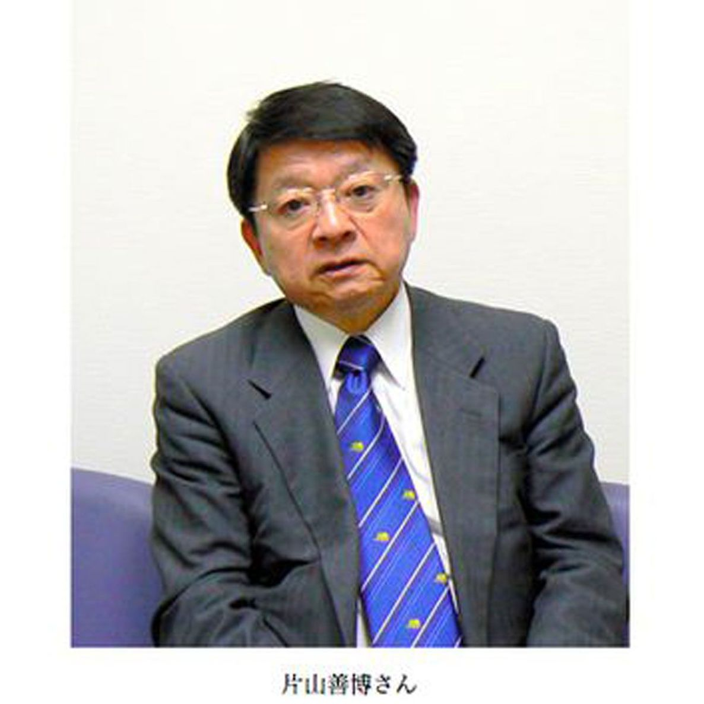
――避難生活が長引けば、避難先に住民票を移す村民が出てくるだろう。それでは飯舘村と切れてしまう。村に住民票を置いたまま、避難先で行政サービスを受け、帰村の日を待つことができる制度をつくってほしい――。
片山は「飯舘だけの問題じゃない、これは対応しなきゃいかんと思いました」という。現場に寄りそうことが正しいとの確信だった。
片山には、鳥取県知事時代に一つの経験がある。
２０００年、県西部地震が起きた。民家が倒壊している現場を目のあたりにした片山は、県独自で住宅再建支援金制度の創設に踏み切る。
国は、個人財産への公費投入に反対してきた。しかしこれがきっかけで０７年、被災者生活再建支援法を改正して住宅再建費の支給を盛り込み、鳥取県の後を追った。
片山の指示に、自治行政局長の久元喜造は答えた。「わかりました。避難先で十分なサービスを受けられる措置を検討します」
局内の議論は熱を帯びた。「５月中」の期限つきで、時間がなかった。
肩身の狭さを解消するには、避難先の自治体に行政サービスの提供を義務づけ、避難者にサービスを受ける権利を付与するしかない。国による財源の裏打ちも必要だ。
他の自治体に行政サービスを委託する場合、ひとつのサービスごとに協議して委託する必要があり、煩雑すぎる。避難先の自治体が提供するサービスを一括して国が告示してはどうか――。
こうして「原発避難者特例法」が閣議決定され、１１年８月１２日に施行された。
片山は現在、慶応大学の教授になっている。
「あのとき、菅野村長はボロボロ涙を流していた。それが原動力です。現場主義ですよ。現場で問題が起きていれば解決を考える。それしかありません」
双葉町の話に戻る。
さいたまスーパーアリーナを避難所に使えるのは、初めから３月いっぱいと決まっていた。４月からはイベント日程が始まるからだ。
２０１１年３月１７日、双葉町の避難受け入れ要請を聞いた埼玉県知事の上田清司が、真っ先に考えたのは「その次」のことだった。
目算はあった。統廃合で廃校になった県立の旧騎西高校。アリーナから北３０キロの加須市にある。
１９日午後、福島県川俣町から到着する双葉町長の井戸川克隆をアリーナで出迎えた上田はいった。
「次の場所は用意してありますから安心してください。３年前に廃校になった高校です」
廃校になって日が浅く、建物はきれいだ。５階建てで規模が大きい。耐震性もクリアしている。
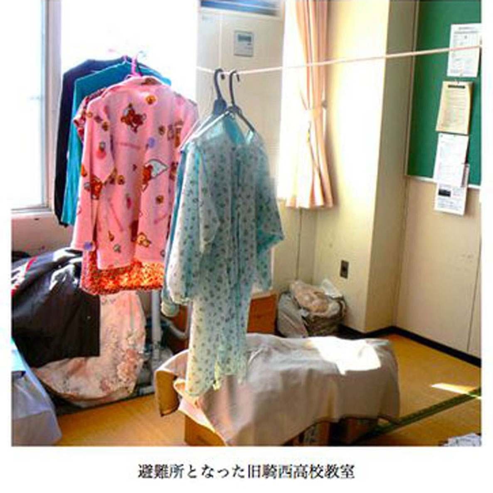
そのころ、加須市の市長、大橋良一（おおはしりょういち）（６５）は、アリーナにバスで到着する双葉町民の様子をテレビ中継で見ていた。県を飛び出すとは大変だなと思ったが、まだひとごとだった。その数時間後、県副教育長の倉上伸夫（くらかみのぶお）（６０）から電話があった。
「４月から旧騎西高校を避難所に使いたい。受け入れてくれますか」
聞くと役場ごと移ってくるという。役場があるなら、加須市はその支援をすればいい。大丈夫だ。大橋はその場で了承した。
３０日から２日間で、約１３００人がバスやマイカーで移ってきた。
川俣町を経てアリーナ、そして加須市へ。双葉町にとって３度目の集団移転だった。
各教室に２０～３０人が入った。柔道場７７人、剣道場１００人という具合に分散した。地域コミュニティーを復活させようと、部屋割りはできるだけ行政区ごとにした。アリーナでは到着順に場所が決まったため、知らない同士でトラブルがたえなかったためだ。役場との連絡がうまく運ぶよう、部屋長も置いた。
床には加須市が畳を敷いてくれていた。町民は避難して初めて布団にくるまって眠った。煮炊きができないため、日に３度の食事は弁当。加須市の温浴施設や民間の浴場までバスがピストン運行した。
移動してすぐ、４月の新学期。子どもたちは地元の小中学校に転入学した。相変わらずプライバシーはない。しかし、期限を切られない安心感があった。旧騎西高校で新しい生活が始まった。
ところが２カ月がたったある日、事件が起きた。
２０１１年５月３１日、警視庁は自称布教師見習の男（５７）を、児童買春・児童ポルノ禁止法違反容疑で逮捕したと発表した。「除霊」名目で３月下旬、東京都内の少女に、裸の写真を携帯電話に送らせたという。
その男は、加須市の旧騎西高校に避難している双葉町民だった。
事件が報じられると、翌６月１日、双葉町長の井戸川克隆宛てに１通の手紙が届いた。
《いままで一生懸命に支援してきました。でも、今回のようなことを起こされては、もう支援する気はありません》
そして最後にこうあった。
《出て行ってください》
名前はないが、手書きの文字は達筆だった。それだけに町長の井戸川は恐怖を感じた。このムードが広がれば、ここにいられなくなる、という恐怖。出て行こうにも、ほかにいくところはない。
３月に旧騎西高校に移ったとき、井戸川は町幹部と地元の区長６人全員の自宅にあいさつに回った。
招待された加須市のイベントにはどんなに忙しくても顔を出した。交通安全運動の出発式や、神社の祭りにも出席した。
縁もゆかりもない自分たちを受け入れ、支援してくれる地域に少しでも報いたかったからだ。
だが、そうした一切が無になった、と感じた。おわびを、なにか行動で示すことはできないか――。
思いついたのが、義援金の受け取り辞退だった。
「双葉町の皆さんのために使ってください」と贈ってくれる義援金は、避難して以来３億円を超えていた。それを今日からは受け取らない。そう井戸川は決めたのだ。
手紙が届いた日の午後４時から、緊急の住民対話集会を開いた。旧騎西高校にいる約千人の町民のうち、約２００人が集まった。
井戸川はこう宣言した。
「双葉町としてけじめをつけるために、今日以降、義援金の受け取りを辞退します」
反対意見が相次いだ。
「逮捕されたのは町職員でも町議会議員でもない。なぜ義援金を辞退しないといけないのか」
「支援してくれる側の判断に任せるべきだ」
「独断で町民全体への生活資金を断っていいのか」
そのたびに拍手が起きた。
だが井戸川は譲らなかった。
福島県を飛び出して埼玉県の廃校に避難した双葉町は、マスコミの関心の対象となった。
町長の井戸川克隆は、取材攻勢にさらされた。しかし当時はいっさい個別取材に応じなかった。取材は週１度の「ぶら下がり」だけ。秘書広報課に個別取材を申し込んでも多忙を理由に断られた。
ところが２０１１年６月３日の夕方、突然、その対応に変化が起きた。数人の記者が会見を求めると、旧騎西高校の臨時町長室に招じ入れたのだ。臨時の会見が始まった。
その２日前、町民が起こした事件をわびて義援金の受け取り辞退を決めた。その対応に、住民対話集会で強い反発を受けたばかりだった。
記者の質問はその義援金問題に集中した。
――１人の町民が犯罪をおかして、なぜ６９００人の全町民の生活資金になる義援金の受け取りを拒否するのか。
「けじめとして何ができるか考えました。お金よりも人と人の心の結びつきを大事にしたい。私たちは世話になっているわけです、この地域、埼玉県民に」
――それにしても、議会や町民に相談もせず、いきなり辞退を決めるのは乱暴ではないか。
「......乱暴だと思いますね」
やりとりを続けているうちに、井戸川はぽつりぽつりと話し始めた。
「行くとこないんですよ、ほんとに」
「私たちはどこに行けばいいんですか。皆さんの書き方ひとつでこの地域の人々の感情が変わるんです。そっとしておいてください」
「帰るとこ、あればいいですよ。国がそういうとこ用意してくれればいいですよ。そんなことしないでしょ、誰も」
１時間近くも話した井戸川の目に、涙が浮かんでいた。その後の言葉に記者たちはしんとした。
「私、狂ってますか？ 私、限界超えてますか？」
このころ、役場の電話は鳴りっぱなしだった。すべて義援金辞退についての意見だった。
「その８割、９割は辞退に反対でした」。いま、秘書広報課の大住宗重は明かす。
「町民のことを考えていない」「心が痛むなら自分の報酬を全額返納しろ」――
よかれと決めた義援金辞退は、外部からも批判された。井戸川は追い詰められた。
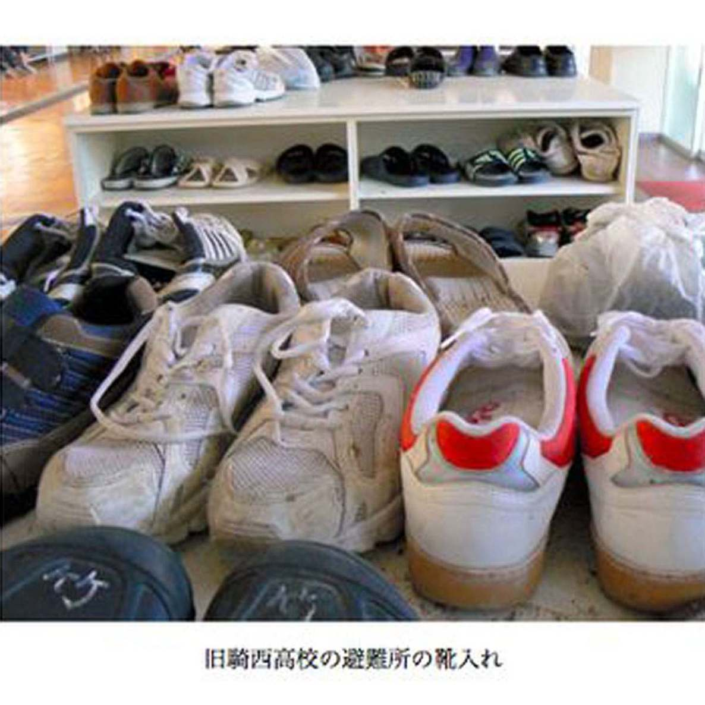
２０１１年６月７日になって、双葉町の町長、井戸川克隆は義援金の受け取り辞退を撤回した。
埼玉県加須市の旧騎西高校に避難している町民の前で辞退を宣言して７日目のことだ。
１日の住民との対話集会で「町長の独断が過ぎる」と反対された。それでも譲らなかった井戸川が、なぜ態度を変えたのか。
役場に殺到した電話やメールの大半は、町長の判断は間違っているという意見だった。自らの判断が否定されたと感じた井戸川は確かに孤立感を強めた。
しかし、秘書広報課に手渡されたメールの束を読み直すうちに気持ちが変わった。全否定する内容ばかりではなかったのだ。
「反省しているのは分かったからもういい、義援金はもらうべきだ、という意見が結構ありました」
犯罪をおかした町民がいて、お世話になっている埼玉県の方たちに不愉快な思いをさせてしまった。それに対して謝罪の思いを伝えたい。それが義援金辞退のそもそもの目的だった。
「投書やメールを見ていると、ある程度そのメッセージは伝わったと感じました」
義援金は約６９００人の全町民の生活資金に、と寄せられるものだ。収入の手だてを失った多くの町民にとっては頼みの綱だ。
「辞退をいつまでも続けるわけにいかないし、もういただいていい時期かな、と」
撤回を表明すると、役場への抗議電話やメールは潮が引くように来なくなった。
しかし、この義援金騒動は「町長の独断の一例」として、町民や町議の記憶に刻まれ、あとあとまで尾を引くことになる。
このころ、井戸川にはもうひとつ問題が持ち上がっていた。
町役場の移転問題だ。
集団移転した旧騎西高校に町の役場支所を設置していた。８７人の職員のうち、福島県内の業務のために残った職員を除く７８人が、支所で働いていた。
その役場機能を福島県内に戻せ、という声が県内にとどまる町民の間で日増しに大きくなっていた。
根っこには、自分たちを置いて県を飛び出した役場、ひいては井戸川への不満があった。
それは３月、さいたまスーパーアリーナに向かう車中で、井戸川が危惧したことだった。
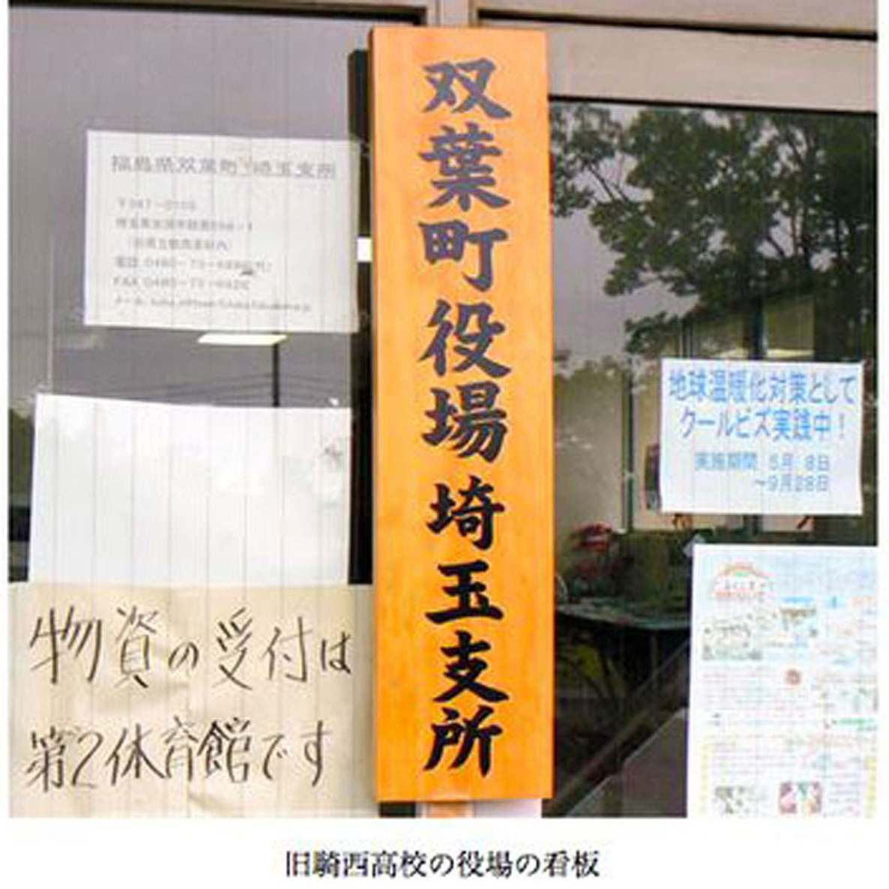
「一度、こっちさ来てくれ。ひどいもんだ」
双葉町の町議会議員、伊澤史朗にその電話が入ったのは、２０１１年４月上旬だ。かけてきたのは福島県に残った町民。「こっち」とは福島県内の避難所のことだった。
伊澤は、役場とともに、川俣町からアリーナへと移動し、３月末からは、埼玉県加須（かぞ）市の旧騎西高校で家族と避難生活を送っていた。
しかし、県内にいる町民がどうしているのか、ずっと気になっていた。様子を見に行こうと思っていた矢先の電話だった。
同僚議員の菅野博紀（かんのひろき）（４２）も同じことを考えていた。２人は４月１３日から１５日まで福島県内の避難所を回ることにした。
会津若松市の東山温泉にある避難所には、地元の中学、高校で伊澤の１年後輩だった三本杉祐輝（さんぼんすぎゆうき）（５４）と家族がいた。
三本杉は訴えた。
――なにより、町から情報が全く入らない。
――支援物資も旧騎西高校にばかり行ってしまって、毛布や食料が何も届かない。
――ほかの町はどこも県内に役場機能を置いている。双葉も早く福島県に戻してほしい。
９年前に悪性リンパ腫を発症した三本杉は、中学の教員を辞めて自宅療養を続けていた。その治療や妻の仕事の都合もあって、埼玉県にいくわけにはいかなかった。
いま、会津若松市の借り上げ住宅で暮らす三本杉はいう。
「いろんな事情から福島を離れられない町民は多かった。みんな不安の中で暮らしていました」
猪苗代町のホテルリステル猪苗代、郡山市の安積（あさか）高校体育館、福島市のあづま総合体育館......。伊澤たちは７カ所の避難所を回り、１００人近くから話を聞いた。
役場がアリーナに移動したことを、後になってテレビで知ったという町民は多かった。
「１カ月もたって、いまごろ何しに来たんだ」と気色ばむ人がいた。「町に捨てられた気がした」。そう言って涙ぐむ女性に会った。
その３日間だけでなく、伊澤はその後も、福島県に何度も足を運んで話を聞いた。
そして６月２８日、加須市の施設を借りて、震災後初めての定例町議会が始まった。伊澤は、町長の井戸川克隆に「役場機能を福島県内に戻せ」と訴えた。
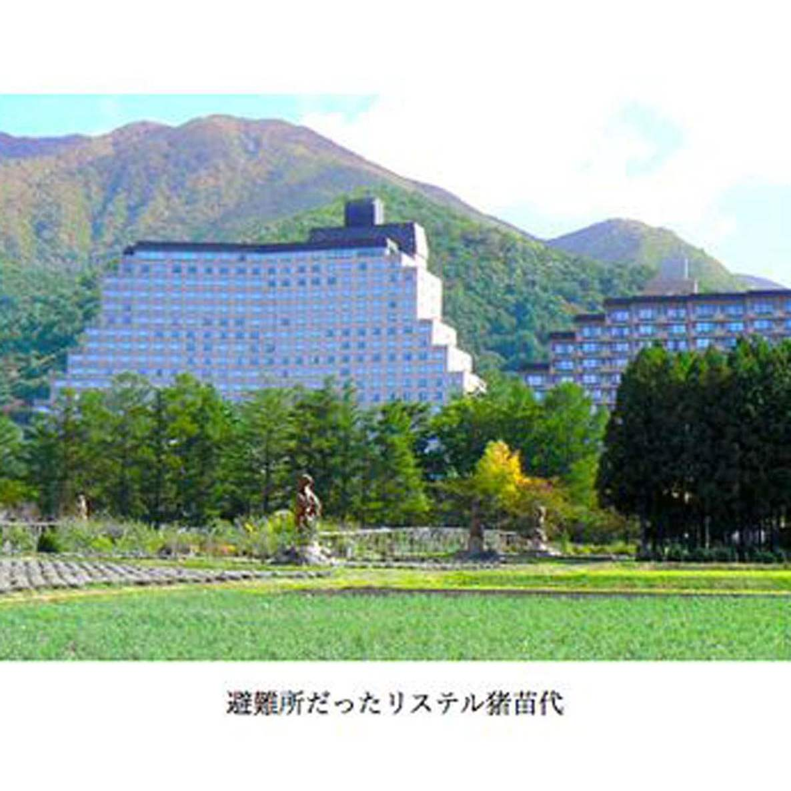
２０１１年６月２９日、埼玉県加須（かぞ）市で双葉町議会の一般質問があった。
「多くの町民がいるところに役場機能を置くのが本来の姿ではないでしょうか。町長がなぜ加須市にこだわるのか、私には不思議でなりません」
２番目に登壇した伊澤史朗は、町長の井戸川克隆に「役場機能を福島県内に移せ」と迫った。
加須市の旧騎西高校に避難している町民は、３月末に移ったときの約１３００人から約９５０人に減っていた。福島県に戻ったり、近くのアパートに入ったりする人が出てきたためだ。
それに対し、福島県内にはその約３倍の約２９００人がいた。その数字を挙げて伊澤は追及した。
それに井戸川はこう答えた。
「県内にそれだけの人が住んでいるのも事実ですが、県外には残りの人が住んでおります。そして、この関東圏には３千人以上の方が住んでおります」
「役場機能を戻さないつもりはありません。しかし、東京電力も、（福島第一）原発事故の収束に向けて全力で取り組んでいますが、まだ収束しておりません」
井戸川はこうもいった。
「町民が安心して生活できる状態に戻ることが必要です。それまでの間は、この旧騎西高校に役場機能を置いてまいりたい」
東電は４月１７日、原発事故の収束までに６～９カ月程度かかる、との工程表を示していた。だが、伊澤は答弁を聴いて思った。
――原発事故の収束なんていつになるか分からない。そんな話を持ち出すということは、町長に役場機能を県内に戻すなんて考えはまったくないんだ――。
この日、役場機能の県内移転を訴えた議員は、伊澤だけではない。一般質問に立った７人のうち４人までが取り上げた。だが、伊澤以外の３人にも同じ答弁を繰り返し、平行線のまま議会は終わる。
伊澤が思ったとおり、当時の井戸川に、役場機能を移転させる気はなかった。
「県内の放射線量はまだまだ高い。町民の生命と健康を守る町長の立場からすると、むしろ福島県内から埼玉県に町民を集めたいと考えています」
こうした井戸川の発言は「双葉町の町長は、風評被害をまき散らしている」と、福島県内で物議を醸すことになる。
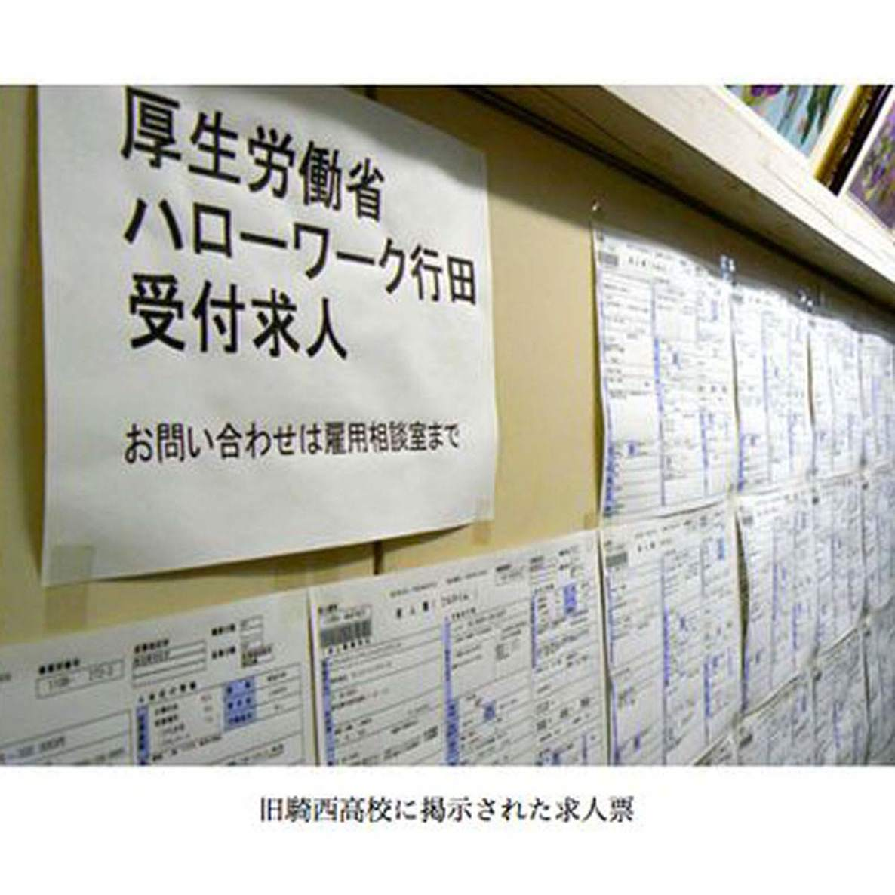
双葉町の町長、井戸川克隆は２０１１年６月の議会で、役場機能を福島県内に戻さない理由として、「原発事故が収束しておらず、町民が安心して生活できる状態に戻ることが必要だ」と繰り返した。
裏を返せば、福島県内の状態はそうではない、といっているに等しい。それは、放射能を気にしながら福島県で暮らす人たちの神経を逆なでする発言だった。
なにを根拠に、井戸川はそんなことを言い出したのか――。
旧騎西高校に移ってしばらくたった４月ごろから、井戸川は、被曝（ひばく）と健康への影響について詳細に調べ始めていた。
３月１２日に１号機が爆発したあと、井戸川は放射能まみれの「ぼたん雪」をかぶった。自分だけでなく、全町避難が間に合わず、大勢の町民を被曝させてしまった。その悔しさが、ずっと頭から離れなかったのだ。
インターネットで調べ、文献を片っ端から読み、講演会にも足を運んだ。そんななかで、１９８６年に起きたチェルノブイリ原発事故の５年後、旧ソ連が設けた被曝許容基準を知って驚いた。
日本では原発事故後の避難基準は年間放射線量２０ミリシーベルトのままだ。だが、チェルノブイリでは５ミリシーベルト以上の区域は避難対象になっていた。
さらに１ミリシーベルト以上５ミリシーベルト未満の区域の住民に「移住の権利」を認めていた。この区域は、被曝しても健康に問題がないとされるが、住民が自己判断で避難する場合、その費用や責任は国家が受け持つ、というのだ。
チェルノブイリ基準をあてはめると６月当時、避難対象となる年間放射線量が５ミリシーベルト以上になるおそれのある地域は、福島県内に広く分布していた。
井戸川はいう。
「放射線の影響は長期間たたないと出てこない。健康に影響するおそれがある地域には戻れない。あの日、ぼたん雪をかぶって、住民を守るためにはなんでもすると決めたんです。だから遠くにも逃げた。今回も、たとえ批判されようと構わないと思っていました」
かつて原発立地自治体の首長として共存共栄をめざし、「原子力ムラ」の一員だった井戸川は、明らかに変わりつつあった。
その変化に注目した人たちがいた。
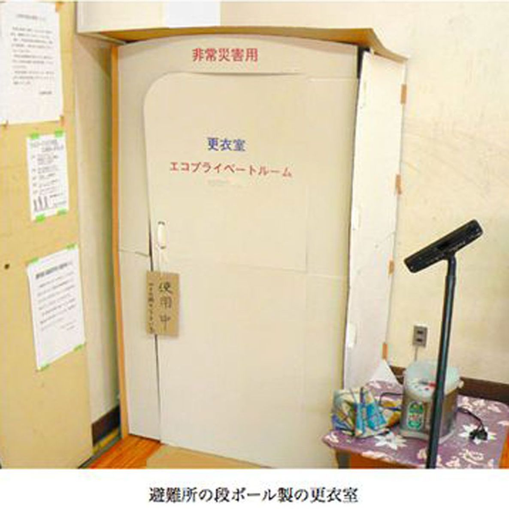
東京のインターネット放送局「Ｏｕｒ（アワー） Ｐｌａｎｅｔ（プラネット） ＴＶ（ティービー）」代表、白石草（しらいしはじめ）（４３）が、双葉町長の井戸川克隆に会ったのは２０１１年１２月上旬だ。東京で開かれた勉強会の席だ。被曝（ひばく）による健康被害について、医師から話を聞こうという会だった。
白石の放送局は、広告収入に頼らず、寄付や会費で運営するＮＰＯ法人だ。テレビ局勤務などを経た白石が、既存メディアが伝えない「本当のこと」を発信しようと仲間と０１年に設立した。
福島で原発事故が起きると、白石は頻繁に福島県に通い、子どもを放射能から守ろうと活動する親たちを取材していた。
勉強会の出席者は市民団体のメンバーや弁護士ら１０人ほどだった。そこに井戸川がいた。
どうして双葉町長が来たのか。白石は不思議に思った。
ネットでは、双葉町は原発の町だから、特別扱いして埼玉県の避難所を用意してもらったのではないか、という推測が流れていた。東京電力や政府が特別に避難所を用意したんだろう、などの声もあった。
原発立地自治体の首長は、電力会社や政府といっしょに原発を推進してきた「戦犯」のような存在だ。そんな戦犯町長が、こんなところに座っている。なぜ？
勉強会のあと、みんなで流れた居酒屋で、たまたま井戸川の隣の席に座った。
酒が飲めない井戸川はお茶を飲みながら、白石の質問に答えた。
安全と信じきっていた原発の爆発で、放射性物質にまみれた「死の灰」をかぶってしまったこと。
遠くへ逃げようと必死で避難先を探して埼玉県に飛び出したこと。
この間、政府からはなんの支援もなかったこと――。
一方で、交付金がほしくて７、８号機の増設を東京電力に要望した過去も率直に話した。
戦犯イメージは崩れていく。
「一番心配なことは」と聞くと、井戸川は答えた。
「福島に残っている町民の健康です。だから今日も参加しました」
その場は２時間ほどでお開きになる。白石は感じていた。この人は、たくさんの憤りを胸にしまいこんでいる。
その井戸川の憤りを爆発させる出来事がほどなく起きる。
１２月１６日、首相の野田佳彦（のだよしひこ）（５５）が原発事故の「収束」を宣言したのだ。
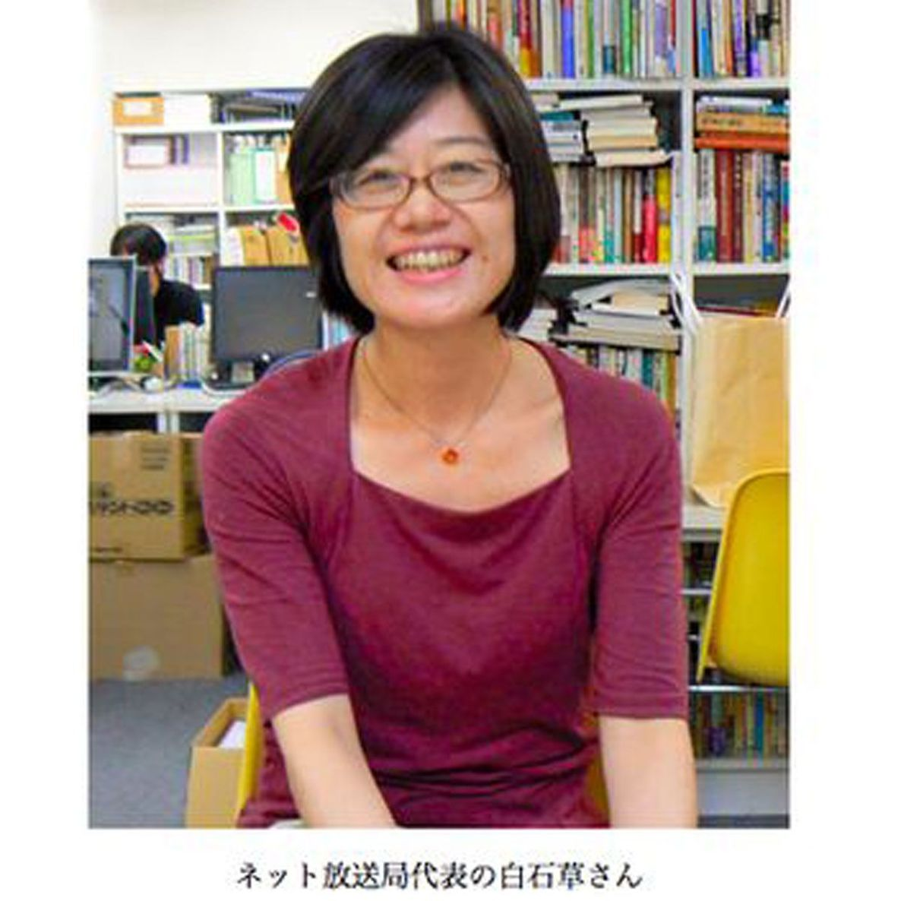
「発電所の事故そのものは収束に至ったと判断される」
２０１１年１２月１６日、双葉町の井戸川克隆は、テレビで首相の野田佳彦の記者会見を見て怒りがこみ上げた。
収束ってなんなのか。自分たちはふるさとに戻ることさえかなわないというのに、もう原発事故に幕引きをするつもりか。
確かに政府の動きはあわただしかった。２８日には、環境相の細野豪志（ほそのごうし）（４１）が福島市に来た。
細野は井戸川たち双葉郡８町村の首長に、除染で生じる汚染土壌などを保管する中間貯蔵施設について「双葉郡内につくらせていただけないか」と頭を下げた。
会議のあと、ほかの首長が態度をはっきりとさせない中、井戸川は１人、反対を明言した。
その日、加須市の旧騎西高校避難所に帰った井戸川が、パソコンに残した文章がある。
《私たちは早く帰りたい。放射能をどこかへ持って行けと加害者に声を大にして言いたい》
《被害者に元の生活をするなと言える人がいるのか。被害者に責任はあるのか》
放射性物質を飛散させた東京電力でなく、なぜ自分たちが、貯蔵施設設置の責任を負わなければならないのか。
お前の町はもう汚染されてしまった、だから中間貯蔵施設を引き受けてもいいのではないか。政府はそういおうとしているのだ。それはないだろう――。
井戸川のその思いは、年明けの１２年１月８日に爆発した。
福島市で開かれた福島復興再生協議会。中間貯蔵施設設置に対する地元の理解を得ようと訪れた野田に井戸川はこう問いただした。
「双葉郡民を日本国民だと思っていますか。法の下に平等ですか。憲法で守られていますか」
一瞬の間があいたあと、野田は井戸川をまっすぐに見ていった。
「大事な国民です」
翌週の１５日、横浜市で開かれた「脱原発世界会議」の会場で、井戸川はインターネット放送局「Ｏｕｒ Ｐｌａｎｅｔ ＴＶ（アワープラネットティービー）」の白石草（はじめ）のインタビューに応じた。思いの丈を話してみませんか、と白石に誘われたからだ。
やりとりはライブ配信された。井戸川は訴えた。
「なにが起きているか、真実を知ってください。われわれを反面教師としてください」
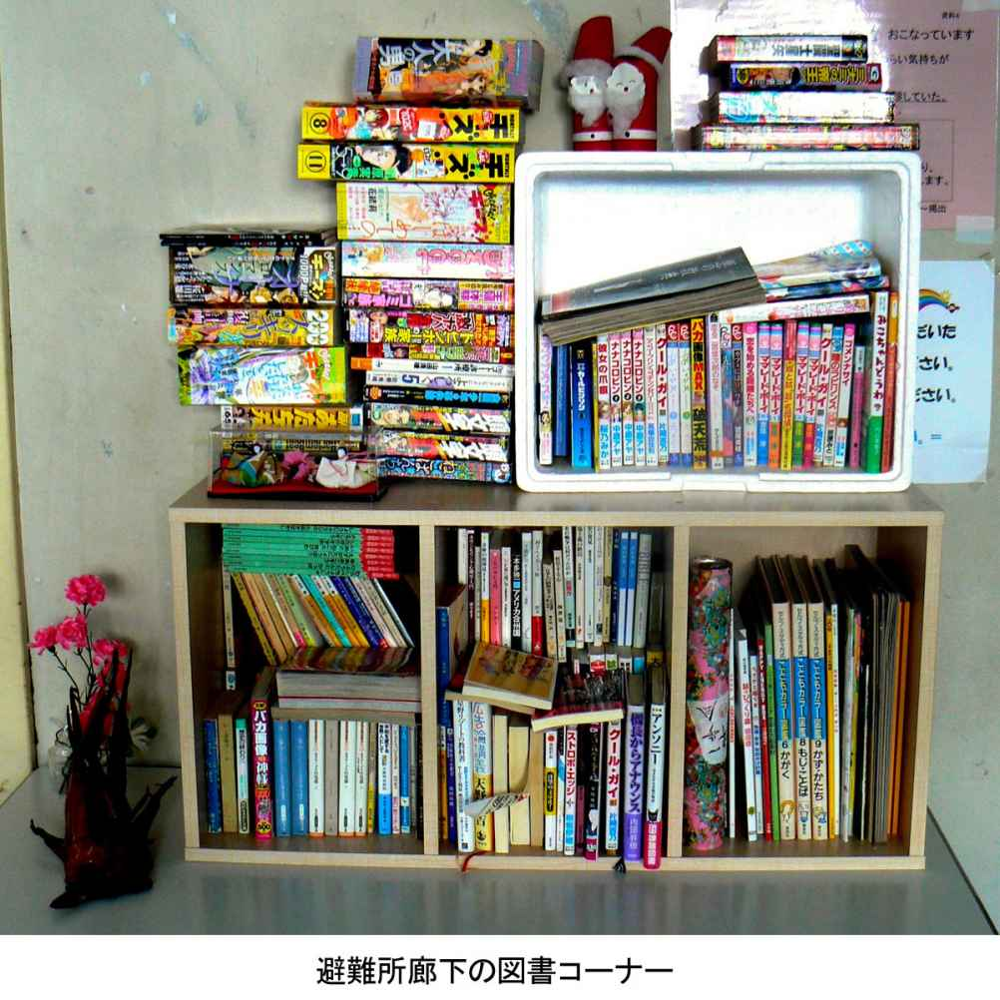
２０１２年３月１９日、双葉町議会は、町役場を福島県内に戻す決議を、全会一致で可決した。
移転先をさがす特別委員会も設置した。委員長は、町議の伊澤史朗。このころには「反・井戸川」の中心的な存在になっていた。
もともと伊澤は、井戸川克隆の過去２回の町長選挙で選挙対策本部長を務めた間柄だ。破綻（はたん）の瀬戸際だった町の財政を立て直した井戸川の手腕も認めていた。
それが、役場機能を埼玉県加須（かぞ）市の旧騎西高校に移したことから袂（たもと）を分かつことになる。
伊澤は避難して間もない１１年４月、福島県内に残る町民に意見を聴いて回る。その２カ月後の町議会で、井戸川に「役場機能を県内に戻せ」と迫った。
伊澤が移転を求めたのは、県内に残った町民が便利だから、というだけの理由ではなかった。
町を復興させたい。そのためには早く県内に戻り、双葉郡の７町村と足並みをそろえ、復興の隊列に加わらなければ。でないと双葉町だけが取り残されてしまう――。
「一時的に埼玉県に飛び出したのは仕方がない。でも、ずっと役場を県外に置く必要はないですよ」
県内にも放射線量が低いところはいくらだってある。町長が県外にそこまでこだわる理由を、伊澤は理解できなかった。
「義援金の拒否もそうだった。町長は独断が過ぎて、もうついていけないと思いました」
１２年６月の議会で、井戸川に対する不信任案が提出される。５人が賛成したが、成立のための６人に届かず否決。９月の議会でも提出され、賛成４人でこれも否決された。
２回とも、伊澤は賛成に回った。
伊澤は、このままでは日本地図から双葉町が消えてしまうと危機感を抱いた。一方、原発の爆発で放射能まみれの塵（ちり）をかぶってしまった井戸川は、町民をできるだけ放射能から遠ざけようとした。２人が目指す方向は分かれた。
１０月１５日、井戸川は臨時町議会で述べた。
「役場を、いわき市の地方法務局出張所跡地に移転させたい。来年３月までの移転をめざします」
突然の表明だった。なぜ、方針を転換したのか。
「議会が要求したから応じた。それだけです」
県を飛び出して２年。役場は福島県に戻る。
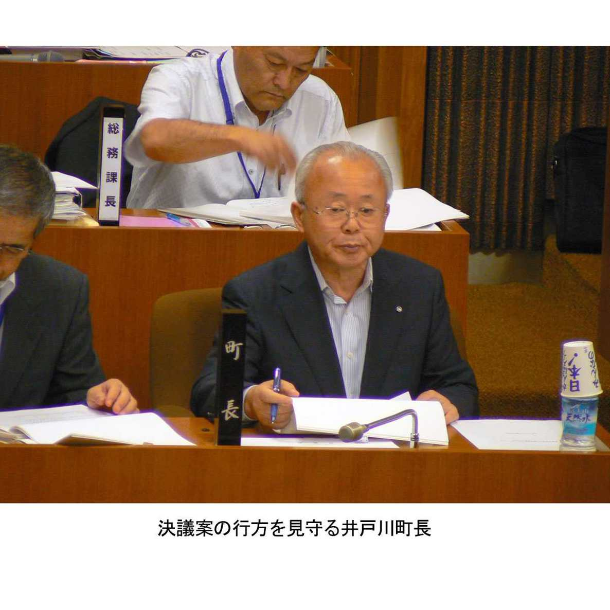
双葉町民が避難する埼玉県加須市の旧騎西高校。３階の「３―Ｃ」教室で、遠藤（えんどう）シゲヨ（７３）は暮らしている。
教室には、ほかに２家族３人が同居する。シゲヨの領域は畳３枚分だ。そこに何枚かの額がある。自作の俳句を入れた額だ。
《燕（つばめ）さえ帰る巣のある仮の宿》
この春、校舎の軒下に巣をかけて子育てをするツバメを見つけた。毎日、その様子をながめて暮らした。そのツバメに、自分の現在が重なって見えた。
こんな句もある。
《きれぎれに亡夫（つま）呼ぶ声が虎落笛（もがりぶえ）》
夫の威（たけし）は元会社員。原発事故が起きたとき、けがで双葉町の病院に入院中だった。そのまま、離ればなれに避難した。２０１１年８月１日、夫は避難先の病院で肺炎を起こし、７４歳で亡くなった。その夫への思いを、冬の烈風に託した。
大震災までは、俳句など無縁の生活だった。働きづめで１男１女を育て、９５歳で母が逝くまで自宅で介護した。夫婦がようやく手にした穏やかな日々の先に、震災と福島第一原発事故が待っていた。句作は、ここに避難して、１１年秋、友人から誘われてはじめた。
《防護服汗と涙の入りまじり》
夏の一時帰宅のときの句だ。涙は、住むことがかなわなくなった家に入ったときに流れた。
「そりゃ帰りたいよ。でも、生きている間は無理かねえ。家は１０年前に建てたばかりだったんだ。本当に無念だね」
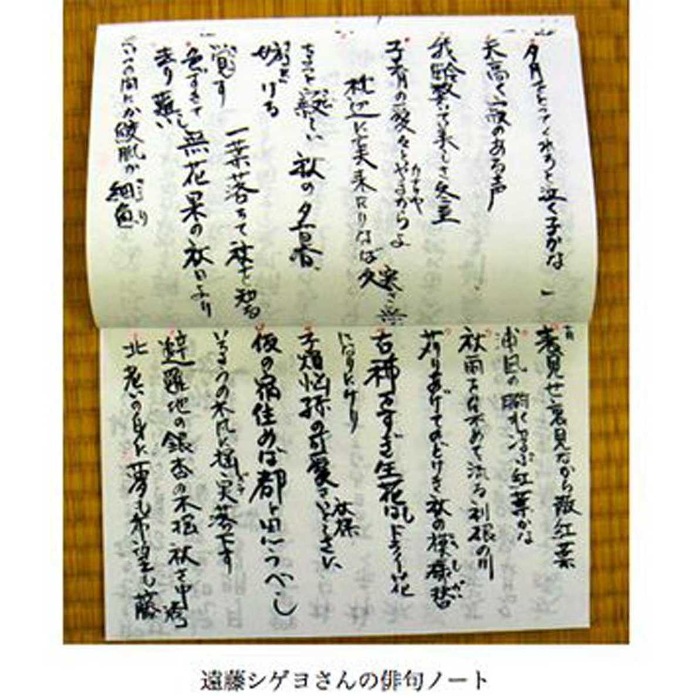
１１月２８日、町長の井戸川克隆は、中間貯蔵施設の現地調査をめぐる、知事の佐藤雄平と双葉郡の首長との協議を欠席した。
知事が調査受け入れを決めたことにコメントを求められると、「認めません」と突っぱねた。
最終処分場のメドも立たないのに、中間貯蔵を受け入れれば、町は半永久的に「放射能のゴミ捨て場」になってしまう。
県を飛び出したのは放射能から町民を守るためだ。でも、捨てたわけじゃない。ふるさとへの帰還が遠のくような話は、認めるわけにいかないのだ。井戸川はいう。
「私たちは長い旅をつづけているようなものです。帰るところがあるから旅なんです」
プロメテウスの罠〔２０〕 飛び出した町「死の灰を浴びた町長」
著 者 朝日新聞（神田誠司）
発行所 朝日新聞社
〒１０４―８０１１ 東京都中央区築地５―３―２
http://www.asahi.com/
発売所 朝日新聞社デジタル本部
〒１０４―８０１１ 東京都中央区築地５―３―２
http://www.asahi.com
２０１２年１２月２１日 ＷＥＢ新書版発行
２０１３年１１月３０日 ＥＰＵＢ版発行
©2012 The Asahi Shimbun Company
All rights reserved. No reproduction or republication without written permission.
ISBN 978-4-90712-569-1
〈ご注意〉本コンテンツは、購入者個人の閲覧目的のためのものです。私的範囲を越える利用・譲渡などは禁止します。
〈おことわり〉本コンテンツは２０１２年１２月２１日に刊行されたＷＥＢ新書版を底本としました。ＥＰＵＢ版の刊行にともない、体裁や表記を直した場合があります。 企業、組織などの名称、人物の役職、肩書等はいずれも記事初出当時のものです。